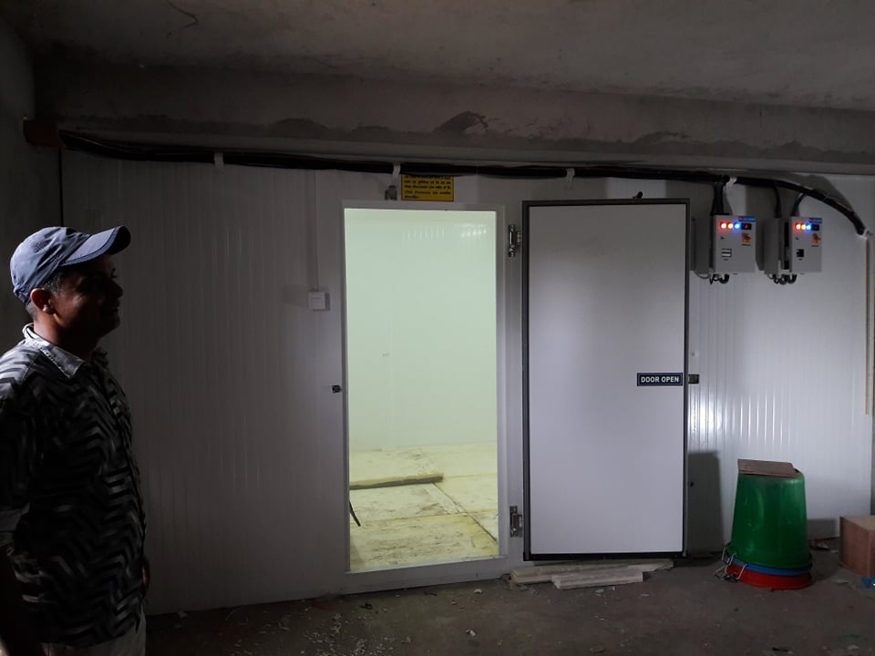
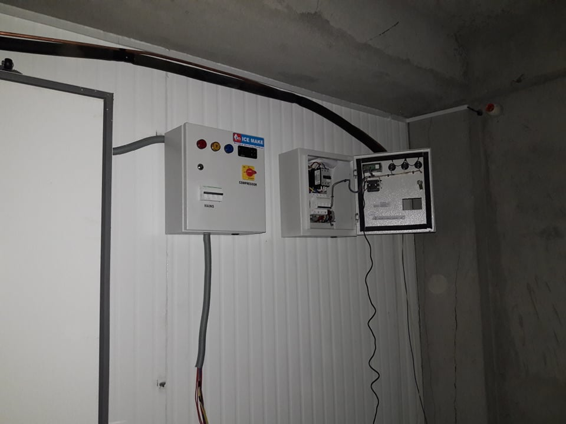
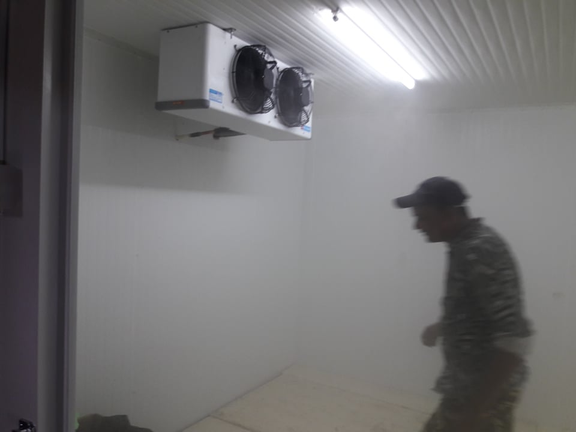
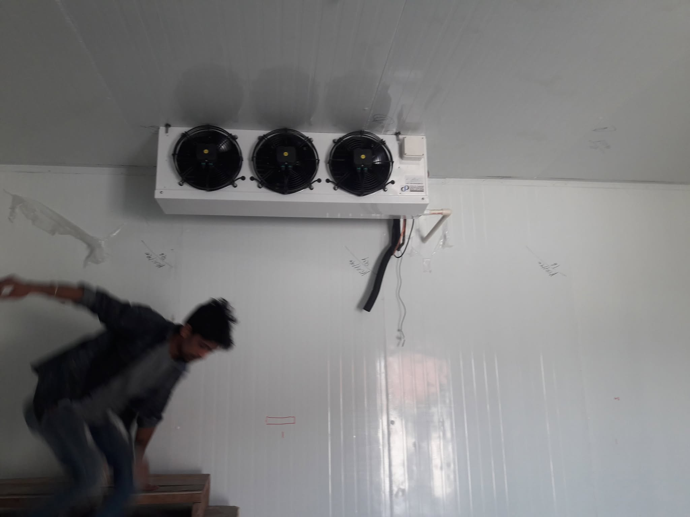
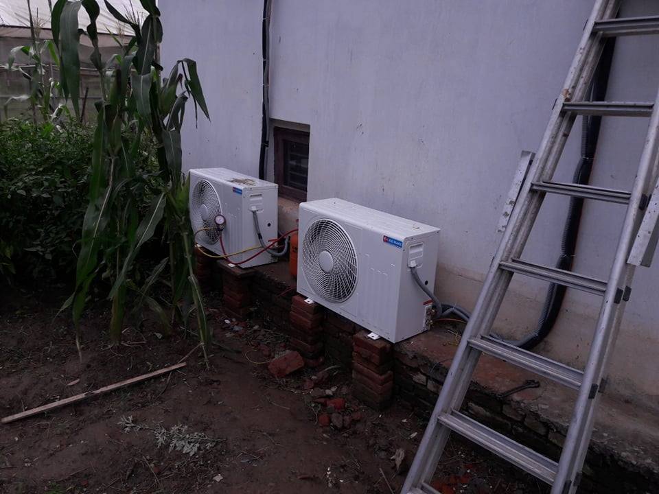
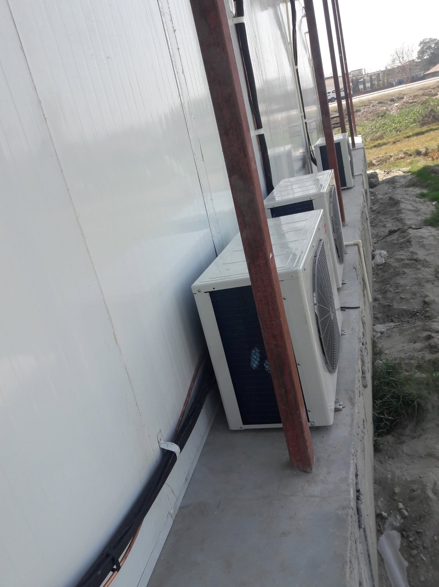
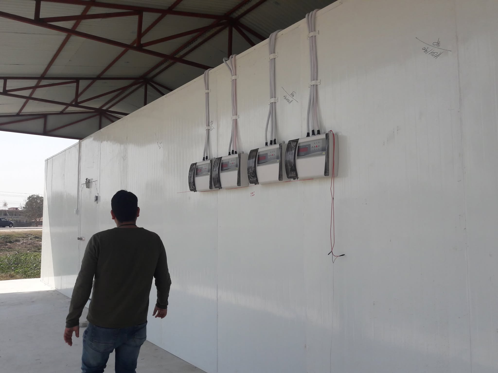
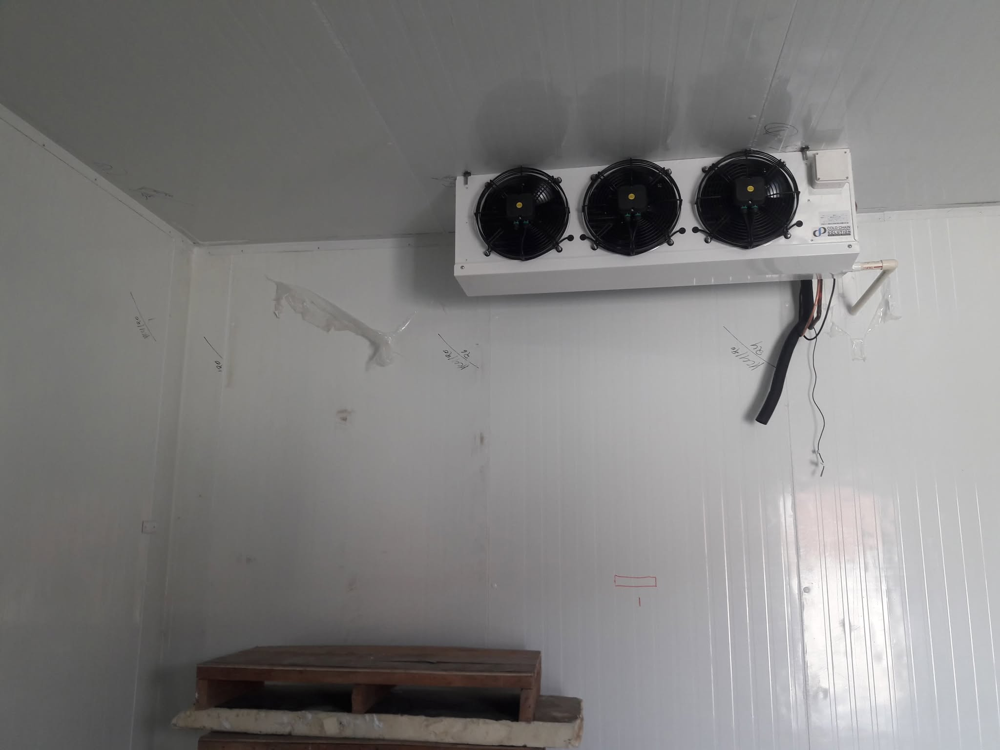

Panel Assembly
Worked alongside the technician to position and assemble prefabricated PUF-insulated wall and ceiling panels.
ENGINEERING • COLD STORAGE
This section documents my experience with cold-storage projects, refrigeration installation, insulated enclosures, controls, site coordination, commissioning and user handover. The Panchkhal project below is the first detailed case study.
FEATURED CASE STUDY • COLD CHAIN
Araniko Highway, Panchkhal, Kavrepalanchok, Nepal • 2021

THE PROJECT
At Masala Bali Bikash Kendra in Panchkhal, I worked alongside a refrigeration technician through a two-day installation of a grid-powered agricultural cold room. My formal role was supervision, but I have always learned engineering best by getting close to the work.
I helped assemble the insulated enclosure, install the floor and door panels, seal panel joints, support refrigeration-system installation, mount the external control system, and prepare the room for handover. The room was intended for potatoes, vegetables, and mixed agricultural produce.
FROM PANELS TO OPERATION
Worked alongside the technician to position and assemble prefabricated PUF-insulated wall and ceiling panels.
Helped install the insulated floor system and fit the swing-type cold-room door to complete the thermal enclosure.
Applied silicone sealant at panel joints and interfaces to reduce air leakage and preserve the enclosure's thermal integrity.
Supported the technician during installation of the split-type refrigeration system and its indoor and outdoor components.
Helped mount the external control unit near the entrance for convenient access without unnecessary door opening.
Guided users on temperature setting, mobile-based monitoring and control, product storage, and suitable settings for different produce.


FIELD NOTE
Fit-up problemDuring assembly, some prefabricated panels would not seat correctly into their grooves. The available installation dimensions differed slightly from what had been expected, so forcing the panels into place would have compromised the fit.
Working with the technician, we identified the interference, carefully modified the affected panel dimensions, refitted the enclosure, and sealed the corrected joints before continuing.
FIELD CONDITIONS
The cold room itself was being assembled inside an already enclosed room. As the insulated panels went up, ventilation became limited and the workspace became extremely hot. With only the technician and me on site, we worked through the installation over roughly two days.
It remains one of the projects that taught me the difference between understanding an installation in theory and physically working through alignment, fit, sealing, access, piping, equipment placement, and commissioning constraints.

SYSTEM DETAILS


HANDOVER
Once the system was operational, my involvement shifted from building the system to making sure the people receiving it could use it.
I guided the users through temperature setting, mobile-based monitoring and control, storage practices, and selecting suitable operating conditions for potatoes, vegetables, and mixed produce.
For me, a refrigeration system is successfully delivered only when the people using it understand what the system is doing and how to operate it correctly.

